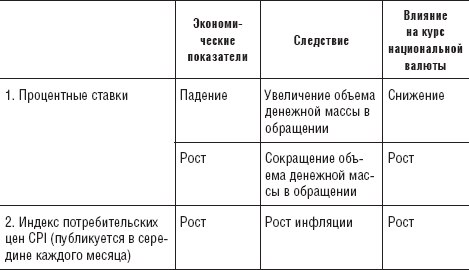
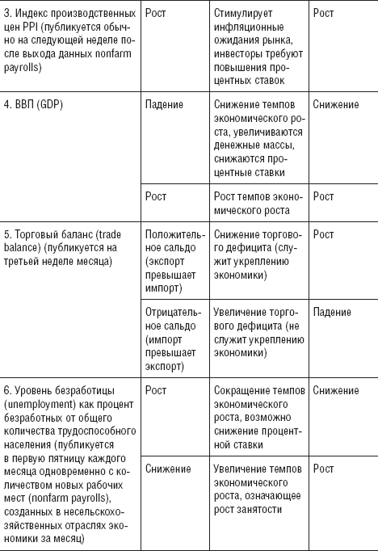
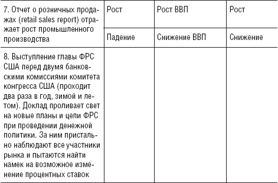

Форекс, размышления о фундаменте

Если вам показалось, что вы поняли, что я сказал, значит, вы меня неправильно поняли.
бывший председатель ФРС
Сначала немного классики. Экономические данные и их влияние на валютные курсы:



«Покупай слухи – продавай факты»... Кто из вас не слышал это выражение? Наверное, слышали многие... Что оно означает? Представьте себе, что рынок ожидает решения ФРС по процентной ставке и полагает, что, скорее всего, ставку поднимут, так как экономическая ситуация в стране предрасполагает именно к этому. Повышение процентной ставки, как известно, – в пользу национальной валюты, и эта валюта начинает рост. И вот наступает день принятия решения – процентную ставку действительно поднимают на ожидаемое количество пунктов, и именно после этого курс данной валюты резко идет вниз. Вроде все понятно: рынок заранее покупал валюту на слухах о повышениях процентной ставки и продал ее, когда эти слухи стали свершившимся фактом, то есть подтвердились, поскольку рынок отыграл движение вверх заранее. Просто? Конечно! Если бы не одно «но». Это теоретически нам все понятно и ясно задним числом... А когда вы включаете монитор и, чтобы воспользоваться ситуацией, начинаете изучать мнения ведущих аналитиков банков относительно того, повысят ставку или нет... Как правило, мнения специалистов в итоге составляют 50/50. Обычно все выглядит так: «Скорее всего, ставку повысят, если... (здесь идет ряд доводов в пользу повышения...) Но необходимо учитывать, что... (тут идет ряд доводов в пользу того, чтобы ставку оставить на том же уровне...) и даже (о Боже!) возможно снижение, так как... (идет ряд доводов в пользу такого варианта развития событий)». Именно поэтому слова А. Гринспена я взяла эпиграфом к этой главе. Всегда есть шанс, что события могут пойти по разным сценариям. И как же нам себя вести в данной ситуации?
Прежде всего давайте разберемся, что такое фундаментальный анализ.
Фундаментальный анализ –это не прогнозирование каких-либо индексов, речей политиков и экономистов. Фундаментальный анализ – это сравнительный анализ экономик и темпов их развития в двух странах, валюты которых мы рассматриваем. Например, если вы рассматриваете пару EUR/USD, то вам необходимо сравнивать экономики Евросоюза и Америки. В принципе, не так уж и сложно поставить рядом все экономические показатели, сравнить их, понять, кто сейчас в выигрышной ситуации, и сделать ставку именно на него. Но... скажите, вы всерьез считаете, что мы с вами получаем абсолютно достоверные данные? Снимите розовые очки и станьте реалистами! Экономикой и обществом манипулирует политика, и обычно это оправдывается государственными интересами. Есть закрытая экономическая информация, которая недоступна широким массам, поскольку является государственной тайной. Есть откровенная фальсификация данных, опять же, исходя из интересов той или иной страны. Есть, безусловно, и финансовые компании с большим штатом сотрудников, занимающихся аналитическими исследованиями для верного прогнозирования развития экономической ситуации в стране. Вы сможете в одиночку провести детальный сравнительный анализ экономик разных стран? Профильтровать и проанализировать огромное количество показателей, причем не всегда общедоступных? Скорее всего, нет... Если только вы сами не владеете этой информацией из первых рук... И дело не в том, что нас с вами сознательно вводят в заблуждение. Слышали когда-нибудь выражение: «Всегда говори правду! Но не всю!..»?
«Шеф! Все пропало! – хочется закричать и забиться в истерике. – Ничего святого, кому верить!» А как вы хотели?
Представьте, что вы встречаетесь со своим кредитором. У вас есть два варианта действий.
1. Вы растеряны и начинаете рассказывать, что сейчас неплатежеспособны, что все рушится и вряд ли вы выплатите кредит в ближайшее время. От вас ушла жена (муж), поскольку считает вас несостоятельным неудачником, занудой; все друзья шарахаются от вас, как от чумы, справедливо полагая, что это заразно. В вас никто не верит, и жизнь катится по наклонной... Финиш!
2. Вы встречаетесь с кредитором, излучая радость и уверенность в завтрашнем дне. У вас перспективы и планы на ближайшее время. А для достижения финансовых высот вам нужно лишь время. И немного дополнительных денежных вливаний в замечательный проект, который у вас уже просчитан и под него составлен бизнес-план. В принципе, вашим проектом уже заинтересовались и готовы ссудить средства под него... Но вы, как порядочный человек, посчитали нужным поставить в известность своего кредитора, поскольку проект уж очень выгодный, именно с ним вам было бы очень приятно работать, чтобы отблагодарить его в дальнейшем за терпеливое ожидание возврата долга, причем с более высоким процентом.
Конечно, вариант 2 сработает. И заметьте: вы были честны, потому что рассказывали о перспективах и своих планах, не кривя душой. Принцип «Понтов не жалеть! Денег не давать!» присущ не только людям, но и государствам (ибо считается, что государство является гарантом интересов своих сограждан). И не стоит возмущаться тем, что ВВП за прошлый квартал пересмотрен и оказался гораздо ниже поданного ранее. Надо просто понять, как на этом зарабатывать и на что прежде всего обращать внимание.
Помню, как я пыталась просчитать, как рынок реагирует на выход той или иной новости, надеясь найти закономерность. И выяснилось, что одна и та же новость в одном месяце может вызвать продажи на рынке, а в другом – покупки.
В эти моменты моему возмущению не было предела. Я показывала своим знакомым трейдерам записи, сделанные месяц назад, когда рынок на одну и ту же новость реагировал прямо противоположно тому, как он делает это сегодня. И вопросы: «Как дальше жить? Кому верить?» – были на тот момент самыми актуальными.
Еще один момент, который меня волновал, заключался в том, как быстро нужно реагировать на выход тех или иных данных и выставлять сделку. Я не успевала еще дочитать в бегущей строке «Что и как?», а рынок уже «усвистывал» на 100 пунктов. И что прикажете делать в этой ситуации? Впрыгивать в уходящий поезд?
На самом деле «ларчик открывается просто». Давайте просто предположим, что собираются главы государств (скажем «Большой семерки», теперь уже «восьмерки», или «двадцатки»...), и американский президент заявляет о том, что экономика страны испытывает некоторые трудности, в связи с чем для оживления экономических показателей требуется «удешевить доллар». Расчетный период, необходимый для того, чтобы улучшилось экономическое положение в стране (по прогнозу специалистов), составляет 2-3 года. В одночасье резко удешевить доллар не получится: во-первых, это приведет к резкому удорожанию других валют (что, безусловно, не понравится другим странам), во-вторых, для самой Америки процедура «оживления» экономики не может произойти за одну ночь. Есть и в-третьих, и в-пятых, и в-десятых. Но мы с вами вдаваться в дебри экономических джунглей не будем, нам необходимо понять процесс возникновения тренда. Как известно, основной тренд длится несколько лет. Итак, президент засвидетельствовал, так сказать, свои намерения, и процесс пошел. Тренд начинает разворачиваться в сторону снижения доллара. Как? Очень просто – выходят новости, которые начинают провоцировать продажу доллара, выступают политики, экономисты, выражающие озабоченность нынешним положением вещей в Америке, что также сказывается на курсе валют. Но поскольку тренд рассчитан на несколько лет, курс доллара не может оказаться в намеченной точке раньше намеченного срока. И если цена начинает падать с большей скоростью, чем предполагалось (что грозит ускорением движения), то именно в этот момент выходят некие новости, выступают некие политики, которые вдруг заявляют, что не так все плохо! Даже очень хорошо. И цена уходит на коррекцию. Для того чтобы ждать следующего толчка для продолжения тренда.
Выходит, что новости – это лишь катализатор движения цены. И в принципе, не так уж нам, трейдерам, важно, какие именно данные выходят (имеется в виду, с повышением или с понижением). Важно другое – время их выхода. Потому что именно в этот момент новости могут спровоцировать движение цены.
Рассмотрим движение цены на примере выхода данных «Nonfarm payrolls». Итак, классически реакция рынка после выхода этих данных проходит в три этапа.
1. Обычно первым импульсом задается направление движения цены. Цена делает резкий рывок. До ближайшей линии поддержки или сопротивления, как правило, 50-70 пунктов. Крупные инвесторы фиксируют прибыль. Цена немного откатывает. Но направление движения задано.
2. Подключается основная масса профессионалов. Движение самое длинное. Порядка 100-150 пунктов. Затем опять фиксация прибыли.
3. После ухода Лондона включаются американцы. Как правило, это еще 50-70 пунктов.
Это – классика. Этого дня всегда с нетерпением ждут все трейдеры. Его так и называют – день трейдера. За один день можно заработать на год вперед (это, конечно, смотря с каким депозитом зайти). Но на месяц вперед – это точно. Я знаю трейдеров, которые работали только один раз в месяц. Именно на выходе данных «Nonfarm payrolls». А все остальное время отдыхали. Но рынок «по классике» ходит все реже и реже.
Сейчас чаще всего я работаю на выходе данных следующим образом. Анализ провожу минут за тридцать до выхода данных. Сначала выбираю валютную пару, на которой буду выставлять сделки.
1. Определяю ближайшие линии поддержки и сопротивления.
2. От поддержки выставляю отложенный ордер на покупку.
3. От сопротивления выставляю отложенный ордер на продажу.
Чаще всего цена на выходе данных теперь делает ложный фолз, но не в сторону реального движения, а в противоположную. Таким образом, открывается отложенный ордер, а второй ордер я отменяю. А дальше – уже классическим путем.
На какие события стоит обращать внимание? Я рекомендую такой перечень:
• совещания «большой восьмерки»;
• президентские выборы;
• крупные совещания ЦБ;
• потенциально возможные изменения режимов;
• возможные дефолты по долгам крупных стран;
• возможные войны как результат растущей геополитической напряженности;
• полугодовые выступления председателя ФРС в конгрессе США.
Именно события такого масштаба призваны отправлять тренд на коррекцию либо придавать новый импульс движению. Но еще раз замечу, что эти события могут являться лишь поводом к развороту или ускорению движения, которое цена, как правило, разрисовывает заранее. И ваша задача – проанализировать график движения цены независимо от того, что вам внушают средства массовой информации, и выставить сделку согласно собственным умозаключениям.
Хочу остановиться еще раз на одном важном аспекте, который можно использовать. Слышали выражение «торговля на разнице ставок»? Что оно означает?
В Японии самые низкие процентные ставки. Поэтому самое выгодное и безопасное – взять иену в банке Японии, купить за нее более высокодоходную валюту в странах, где процентная ставка выше, чем в банке Японии, например доллар, евро или фунт, и получать более высокий процент в банках Евросоюза, Америки или Англии. Кому что нравится. Беспроигрышный вариант. Представляете, в одном месте берем валюту под один процент, вкладываем ее в другую валюту, где процентная ставка выше (допустим, 2 %), а разницу от процентных ставок (1 %) просто кладем в карман. Помните, как в рекламном ролике: «Мы с тобой тут сидим, а денежки идут. Да, папа?» Да. Это именно тот случай. Но не для нас с вами, простых смертных. Взять кредит в банке Японии нам, скорее всего, не удастся. Но заработать на рынке Форекс, используя эти знания, мы сможем. Ведь в этот момент иена начинает дешеветь, поскольку ее продают. И есть еще один нюанс. Когда в Японии закрывается финансовый год, иену необходимо вернуть на родину. Этот процесс носит название репатриации. Поэтому те, кто брал в банке Японии иену и покупал за нее другие валюты, вынуждены делать обратные операции. То есть они продают доллар, фунт, евро и покупают иену. В этот момент иена начинает дорожать... Известно, что в Японии финансовый год закрывается в марте, и иену обычно начинают покупать с конца февраля. В конце августа подводятся итоги и закрывается финансовый год в США и Канаде, что также играет в пользу иены. В этот момент она тоже, как правило, дорожает. И трейдеры обычно используют это в своих сделках.
Но такие события происходят не каждый день. Их необходимо учитывать и использовать в своей торговой стратегии. А как же планировать свою работу на каждый день?
Итак, вы работаете, допустим, по паре EUR/USD. Распечатали на неделю календарь выхода данных по этим зонам. Обратили внимание на время выхода тех новостей, которые могут спровоцировать движение цены, и выставляете позиции по техническому анализу до (заметьте – до!) выхода этих новостей. Как правило, цена разрисовывает входы в рынок до начала движения. Если же эти входы не очень красивые (см. главу 4), не полагаемся на случай, а ждем более понятной ситуации. Ждать тоже надо уметь! Это мой взгляд на фундаментальный анализ! Может быть, категорично, может, кому-то покажется примитивно, но практика показывает, что простота восприятия – надежный союзник трейдера. Это моя точка зрения, возможно неверная, но она моя, испытанная на практике, и поэтом я ей доверяю.
? ДЕГРАДАЦИЯ
(из цикла «Невыдуманные истории»)
Ксения как-то приходит и спрашивает: «Слушай, а когда ожидается деградация иены?». «Что?» – не поняла я. «Деградация когда начинается?» – и смотрит на меня удивленно: типа, что же это ты не знаешь такого простого слова... «Ксения, репатриация, наверное. Ты что-то заблондинила». (Это выражение мы обычно употребляем, когда кто-то сморозит какую-нибудь глупость.) «Да какая разница, как она называется, главное – когда она ожидается».
И в принципе, она права. Называйте репатриацию как хотите. Главное, что можно заработать.
? МИФ О БЛОНДИНКАХ
(из цикла «Невыдуманные истории»)
Помню, как Ксюша заработала первую приличную сумму. Закрыв сделку, она затанцевала по кабинету, радостно крича: «Я не блондинка!!!» Хотя, если честно (по цвету волос), она – блондинка. А по мозгам... Вован ее прозвал «золотая голова».
А «поблондинить» мы все иногда можем себе позволить. Независимо от цвета волос и пола. Или я не права?
? ЗАПАСАЙТЕСЬ ПАМПЕРСАМИ
(из цикла «Невыдуманные истории»)
Вован – опытный трейдер. Перед выходом важных данных, кровожадно улыбаясь, он произносит напутственную речь новичкам. Смысл этой тирады прост – запасайтесь памперсами, уважаемые господа! «Вов, а у тебя-то самого какие планы?» – спрашиваю его. «А я рынок изучать пойду», – блаженно улыбается он в ответ. Ему действительно эти движения по барабану. Внутри дня он не работает. Вован – междудневной трейдер.